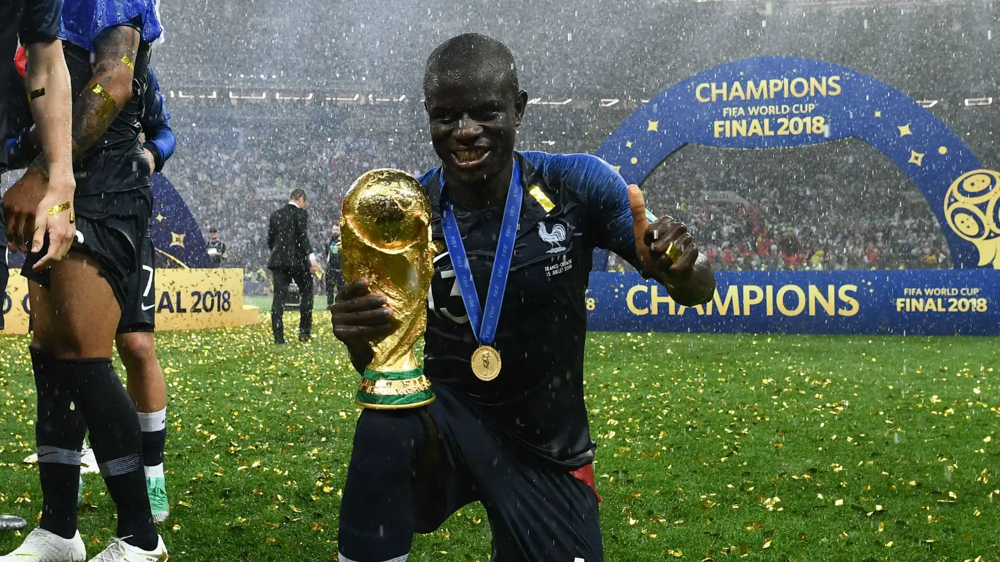
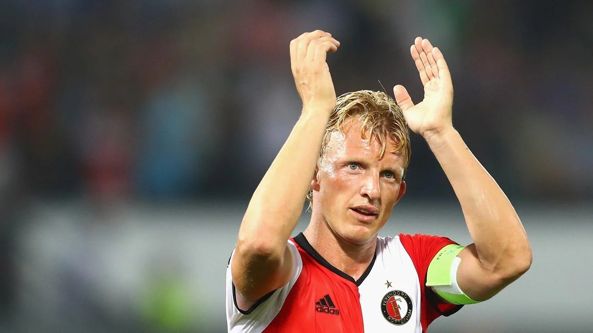
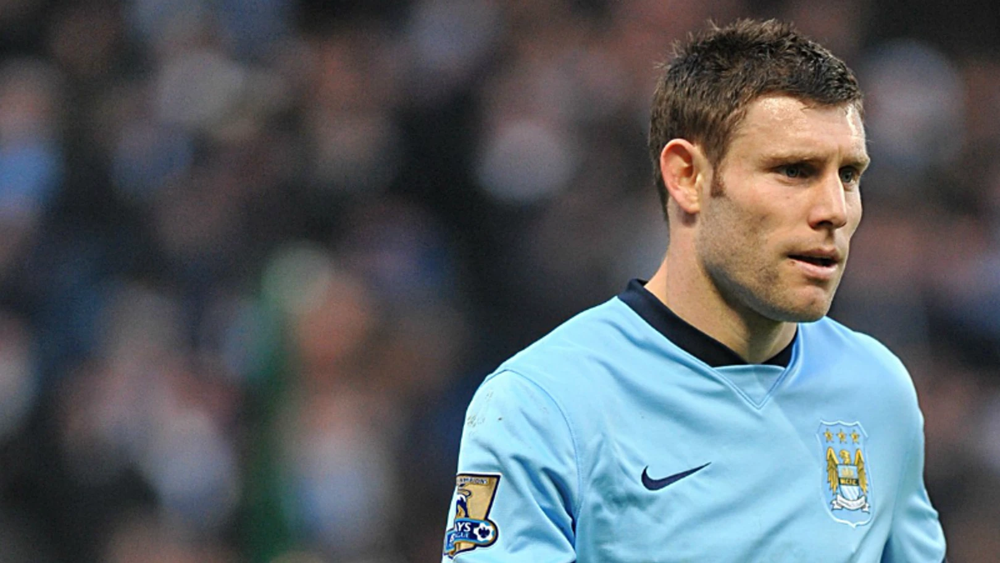
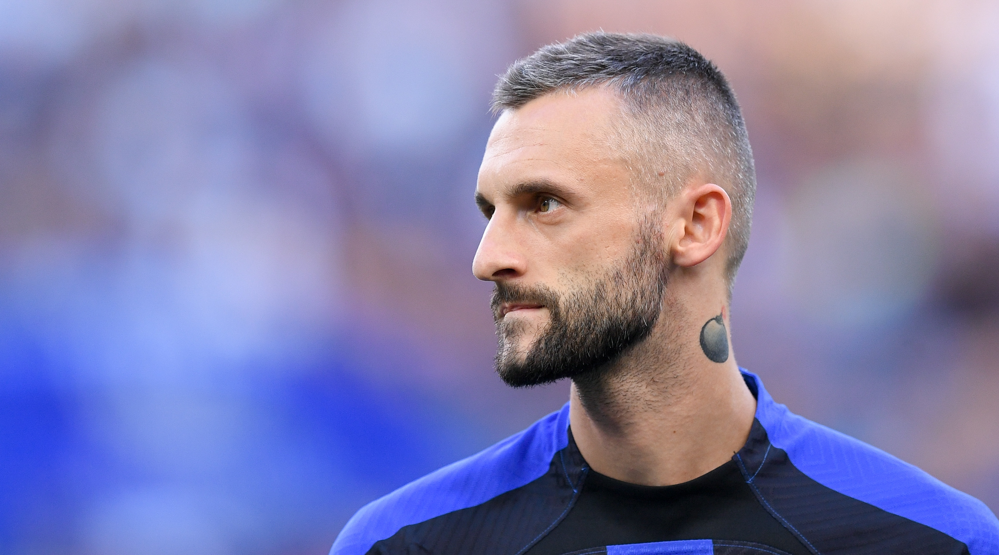

N’Golo Kanté
Kanté parece tener dos corazones y cuatro pulmones. Su capacidad para recorrer kilómetros, recuperar balones y aparecer en todos los rincones del campo raya lo inhumano. Cortés fuera del campo, depredador dentro de él. Silencioso, eficiente y omnipresente. El jugador que te cubre tres posiciones él solo.

Dirk Kuyt
Kuyt representa el sacrificio hecho futbolista. Un delantero que corría hasta reventar, hacía kilómetros sin quejarse, presionaba como si fuese el último minuto del partido y trabajaba para el equipo como el obrero más profesional del planeta. Su ética de esfuerzo lo convirtió en leyenda allá donde jugó.

James Milner
Milner parece que nunca se cansa. Lleva dos décadas compitiendo al máximo nivel gracias a su disciplina, su inteligencia y una resistencia fuera de lo común. En el minuto 120 sigue apretando, persiguiendo rivales y dando órdenes. Es el ejemplo perfecto del futbolista que nunca baja la intensidad.

Marcelo Brozović
Su mapa de calor es una hoguera permanente. Brozović tiene la habilidad de estar siempre donde hace falta: roba, distribuye, presiona y cubre. Corre para tres. Un pulmón croata que transforma el ritmo del medio campo.